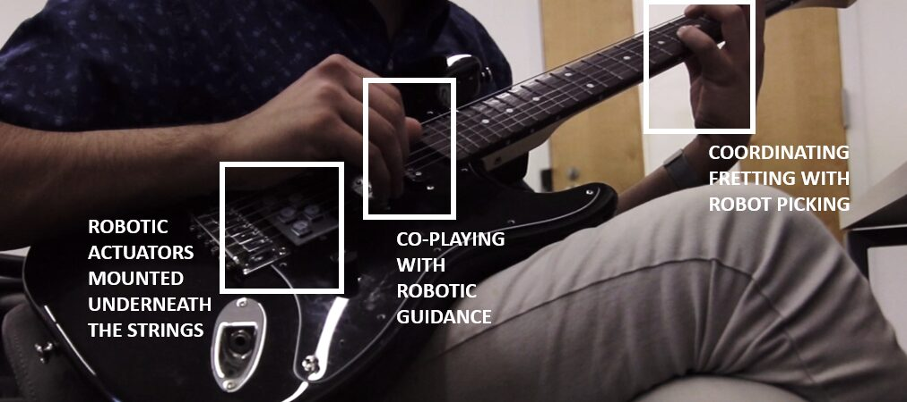
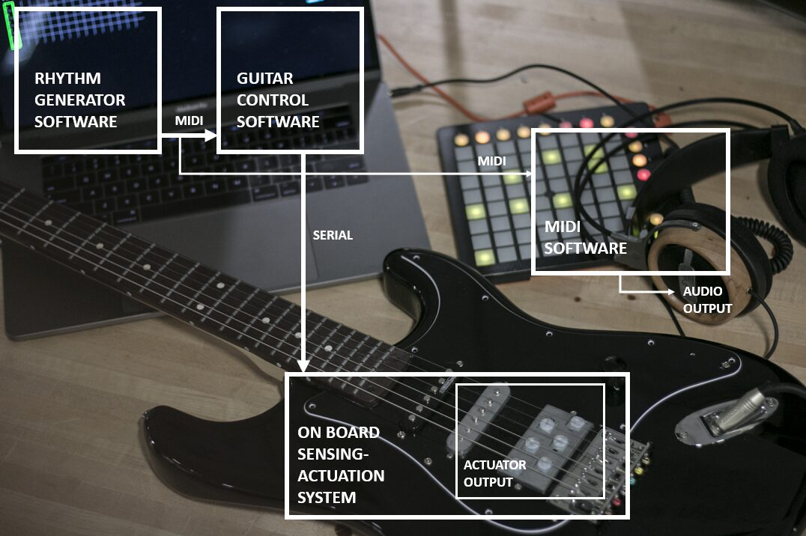
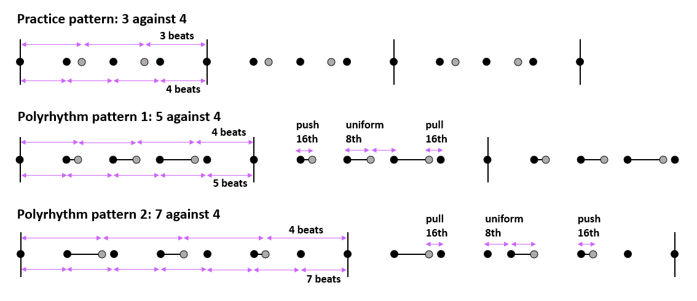
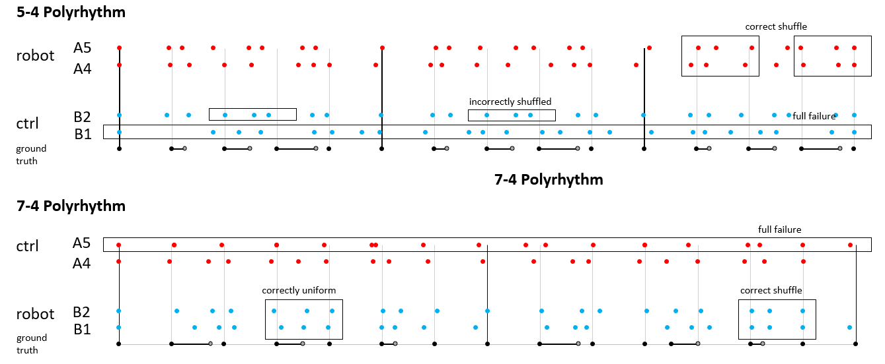
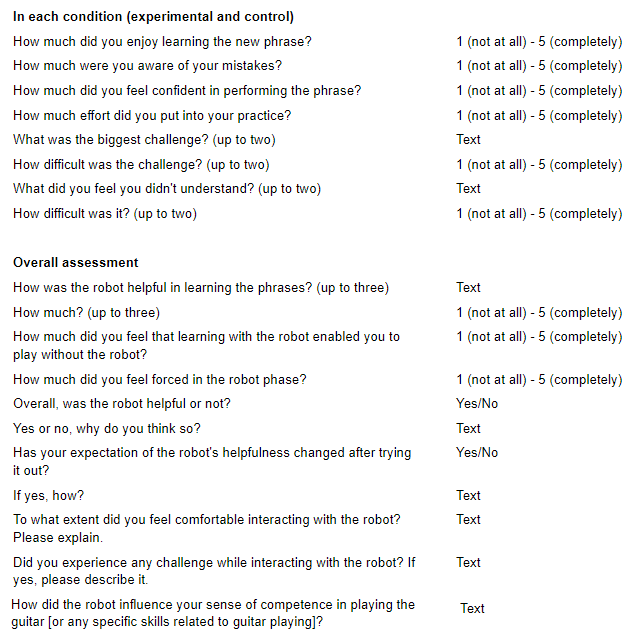

A Study on Learning Advanced Skills on Co-Playable Robotic Instruments
Abstract
Learning advanced skills on a musical instrument takes a range of physical and cognitive efforts. For instance, practicing polyrhythm is a complex task that requires the development of both musical and physical skills. This paper explores the use of automation in the context of learning advanced skills on the guitar. Our robotic guitar is capable of physically plucking on the strings along with a musician, providing both haptic and audio guidance to the musician. We hypothesize that a multimodal and first-person experience of “being able to play” could increase learning efficacy. We discuss the novel learning application and a user study, through which we illustrate the implication and potential issues in systems that provide temporary skills and in-situ multimodal guidance for learning.
Author Keywords
Robotic Instrument, Human-Robot Interaction, Computer-Assisted Learning
CCS Concepts
• Human-centered computing → Human computer interaction (HCI) → Interaction devices
Introduction
Music is a discipline where both creativity and physical skills are paramount. The importance of skill makes the training aspect an important part of a musician’s journey [1]. Nevertheless, we do not see technologies mature enough to support advanced skill training on the guitar. Research in robotic musicianship has showcased autonomous instruments for marimbas [2][3], drumming [4] and others [5][6][7]. However, most systems focus on the output capabilities of the systems, where they lend a potential in designing collaborative and assistive systems for developing musical and motor skills.
This research builds on previous works on a robotic guitar; the guitar is capable of rendering right-hand actions robotically (Figure 1). With the ability to physically co-play with a musician on the instrument, the instrument could organically extend upon or collaborate with the user—a form of collaboration distinct from jamming with another. Particularly, we identify and explore opportunities in human-machine collaborative learning for complex rhythm patterns that are unintuitive to learners.


Figure 1. The setup for the user study. The actuators placed underneath the strings allow for the robot and a musician to co-play.
In this paper, we present a study with college music students with intermediate to advanced guitar skills. We focus on the experience of “being able to play” or “feeling when messing up” in the process of learning, as learning new skills requires a continual execution of skill and reflection upon it [8], through a robot that overtakes and guides the rhythmic execution of polyrhythm patterns. We contrast this approach to using a metronome, investigating how users acquire skills for those complex patterns, and the way their learning progresses differently. We hypothesize the ability to observe, understand and execute skills first-hand can provide a better experiential learning [9] for musicians. We discuss the study results in light of how the envisioned form of musical instruction could impact learning in future music learning systems.
Related Work
Assistive Learning on Musical Instruments
Computer-assisted learning in music is gaining increasing attraction. One of the most related works is a guitar fretting robot [9] that eases the learning of chord progression for beginner players. Their result suggests that providing computational skill fluency allows learners to better understand the music, separately focus on aspects of the task, and have higher engagement. Another notable work [10][11] used vibrotactor gloves to stimulate tactile learning for piano players in memorizing melodic phrases. It showed the potential of multimodal, in-situ guidance for increasing the learning performance not only in terms of skills but also overall musical understanding. The paradigm has also been explored in flutes [12] where actuators mounted on the flute renders the kinesthetic experience of playing. However, the tasks in the studies are relatively simple, with questions remaining on whether those may work in more complex skill training.
Robotic Co-Playable Instruments
Systems that can play string instruments have been widely explored [13][14][15][16][17][18][19]. Augmented guitars or other string instruments demonstrated the ability to play complex patterns, however, often these systems are limited in co-playability—with robotic actuators being designed for a specific playstyle (e.g. strumming [17] or hammering [18]), limited in play rate [16], or intended for fully autonomous operation [14][15].
Our system is designed to overcome the issues of co-playability on the guitar, by allowing robotic actuators and musicians to access the strings without interference. The co-playability has been explored in other instruments [18][19][20][21]. Notably, Bretan and colleagues [4] showcases a supernumerary system where a robotic arm autonomously renders musical expression in parallel with a person.
Human-Machine Mutual Actuation
Several works in HCI and NIME explore the coupling between users’ physical action with machine actuation. The prosthetic drumming system by Bretan et al [4] can allow a drummer to render complex stroke patterns beyond ordinary human dexterity. Similarly, smart hand tools have been explored to help novice artists [22][23]. In these works, robotic capability is coupled with human actions and supplements user skill levels. Recently, such a paradigm of Human Machine Mutual Actuation has been formulated [24], through a handheld mechanical device that automates grasp release timing for precise throwing action. We envision an integration of this paradigm into music, exploring how a co-play between human and computer could temporarily increase use skills and improve learning.
System Configuration
Our study extends on previous works [9][25]. The detailed system configuration can be found in [25]. In summary, the system consists of several plucking mechanisms (including solenoids—used in this paper) mounted on the guitar. Our control software communicates with the microcontroller on the guitar via MIDI (Figure 2); for this study, we implemented a polyrhythm generator that renders specified patterns across a selection of guitar strings. Most importantly, the actuators on the guitar are concealed away from the bridge area (Figure 1), not interfering with user actions. As a result, musicians and the robotic actuators can co-play in various ways—e.g. passively following the robot plucking or adding new notes to it.


Figure 2. System configuration: control software, audio devices and the robot.
User Study Procedure
Our study aims to test the impact of the system in advanced musical skill learning. The choice of advanced level is to reduce the variance in learning speed between users, and investigate the system’s effect in elaborate tasks. We recruited 7 music students in our college with at least 2 years of experience in playing the guitar. We planned for a larger study size, but due to COVID-19 we were not able to continue on the recruitment. Instead of focusing on statistical analysis, in this section we identify notable patterns and use these as a basis for discussion.


Figure 3. Polyrhythm patterns in the user study. Gray: shuffle beats, Black: base beats.
Participants first engage in a 5-minute warm-up session, getting familiarized with the system through a simple polyrhythm pattern—3 against 4 (Figure 3). Then, in the control condition, they practice a rhythm pattern using sound cues only. The two rhythms in the polyrhythm pattern are pitched differently for easy understanding. In the experimental case, they employ any practice method to practice with the robotic instruction on another rhythm; for example, they can coordinate both their hand with the robotically played rhythm, or let the robot play while observing and learning how the rhythm should be played (Figure 1).
Half of the study participants begin in the control condition then onto the experiment session (group A), and the other half vice versa (group B). The two polyrhythm patterns used in these sessions are 5 against 4 (5-4) and 7 against 4 (7-4). The assignment of patterns in respective conditions is flipped between the groups to reduce bias between the groups. These two polyrhythm patterns were chosen for their similarity in rhythmic structure—having two different 16th shuffle patterns as well as a uniform pattern (Figure 3). After each session, the participants were asked to play the rhythm without guidance. The BPM of audio or robotic guidance is heuristically determined, based on whether the participants were able to discern the intended rhythm pattern, while being sufficiently challenged by the task. After all the sessions, an exit questionnaire was given, reflecting on the learning experience.
Results and Discussion


Figure 4. Example transcription data. Top chart shows participants playing the 5-4 pattern in each condition. Bottom shows respective data for the 7-4 pattern. Participant ID denotes which experiment group they were in (A or B) and who (the number).
Overall, three participants showed recognizable improvement between the conditions (figure 4) where others showed relatively mild differences. They were not able to reproduce any identifiable pattern in the control condition, while being able to successfully replicate the rhythm with the robot. Statistically, there was no significant difference in the normalized error in base progression (ctrl: 0.12 ± 0.1, exp: 0.12 ± 0.07, d = 0.03, p = 0.45), which indicates that most participants had comparable proficiency between the conditions. Generally, there was a higher normalized error rate (ctrl: 0.17 ± 0.16, exp: 0.11 ± 0.09, d = 0.43, p = 0.11) and variance (ctrl: 0.15 ± 0.16, exp: 0.07 ± 0.05, d = 0.59, p = 0.07) in shuffle beats in the control condition. Inverse consistency, that we defined as the standard deviation of shuffle beat error among respective shuffle patterns (Figure 3), was used to characterize the consistency in shuffle representation. The measure shows the participants were more consistent in representing shuffle rhythms with the robotic guidance (ctrl: 0.12 ± 0.14, exp: 0.06 ± 0.05, d = 0.46, p = 0.15). However, the size of the study was too small to have a meaningful statistical insight, and we rather use this for a qualitative discussion later.


Figure 5. Example exit-questionnaires.
We also ran a cross-analysis on the measurements with the self-evaluation (5 point Likert scale, Figure 5). Overall, there was a negative correlation between mistake awareness and errors in the control condition (all = -0.3, shuffle = -0.17), and positive in the experimental (all = 0.23, shuffle = 0.38)—suggesting a more object self-assessment in the experimental condition. The amount of effort they put in was positively correlated with errors in the experimental condition (all = 0.24, shuffle = 0.43), in contrast to weak or no correlation in the control (all = 0.02, shuffle = -0.2).
Additionally, there was a notable negative correlation between inverse consistency and confidence in the experimental condition (exp = -0.69, cf. ctrl = -0.01). This could imply that once a person successfully learns through robotic guidance, they feel they can consistently replicate that better. There was also a weak positive correlation in inverse consistency with “feel being forced” (= 0.47), and a negative correlation with “feel being enabled” (= -0.33).
Embodied Agent Duality
The characteristic of the instrument we used in this research is that a computational agent [26] is embedded in the tool. Often agents take a conversational form [27], while recent smart hand-tools research [22][23] showcases how the agents embedded in tools could “extend” user actions. The configuration allows for a tool to become a direct extension of user intent and being conversational at the same time [28]. Some comments from the participants speak to the conversational aspect: “[robot] felt like someone else was playing the guitar while I held it, which was jarring at first but easy to adapt to” (A3), “it was very helpful to … actually see the strings vibrating at the right times … as opposed to listening to two tracks at once and trying to break them apart in my mind” (B2); and there were comments relating to the extension aspect as well: “... provided a lot more tools to be used at my disposal” (A3), “... more comforting because I felt like I had a backup in case I messed up” (B2).
In our system, when a user is engaged and synchronized with the robot, the robot may move into the background of attention, while the user executes a musical sequence without resistance. An everyday example could be a ski instructor holding your arms as you learn how to take turns. Once your actions synchronize with the instructor’s plan, the act of skiing becomes natural and identical to skiing without the instructor. However, the more you desynchronize from the instruction, you become aware of the existence of the instructor—very much like how Dourish [29] explains how a tool appears or disappears. This is also supported by the positive correlation between inverse consistency and the feeling of being forced. In other words, when a person could not develop sufficient consistency, every interaction with the robotic guidance may feel like a friction.
However, the positive correlation between mistake awareness and error implies that the robot also enhanced the participants’ awareness of mistakes. Nevertheless, the feeling enabled score was rated higher than the feeling forced score. We discuss what could have happened in the following.
Self-reflection
One of the most notable observations from the study was the positive correlation between how much they are aware of their mistakes and the amount of error made in the experimental condition, contrasting the uniformly negative correlation in the control condition. Self-reported amount of effort was positively correlated with the measured error; in other words, they were in fact more attentive and responsive to their mistakes when practicing with the robot. The results could imply that the robotic guidance or reference helped the musicians to be better aware of their level of mastery and put more effort when they are less proficient. Overall, the participants reported a higher mistake awareness in the control condition, while their awareness was not proportional to the amount of errors made. Instead, ones that showed higher mastery were better aware of their mistakes in the control case, further implying that objective reflection was inaccessible to those without sufficient development of skills.
Multimodality and Synchronicity in Skill Training
One research question we had was on the multimodal aspect of training with robotic instruments. When practicing with an audio cue, one needs to execute skills in the physical dimension, while assessing their success in audio space, i.e. comparing the resulting sound with a metronome. We hypothesized that being able to compare execution and reference in the action space—the guitar strings—could reduce the cognitive load. These are evidenced by participant comments: “[in the control condition] it was difficult to understand if I was rushing or dragging at times” (B2), “I used [the robot] as a tool to learn the patterns using multiple senses” (B2), and “it is much harder for me personally to decipher the complex rhythm by ear, so seeing it happen in real time was helpful” (A4).
Furthermore, self-reported confidence showed no correlation with shuffle error in the experimental case, contrasting a negative correlation with inverse consistency. It was opposite in the control case: negatively correlated with shuffle error but none with inverse consistency. These suggest an attention shift from accuracy to consistency, when practicing with the robot. We believe this shift could be originated from increased attention on the physical domain, which was evidenced by reports from the participants: “[I] used finger gesture to follow the rhythm” (B1), “[the robot] … made me focus on matching my fingers to it rather than what I hear” (B2), and “[I] could sense when I was out of rhythm (A4).
Can Borrowed Skills be Acquired?
Based on the premise that the robot removed the necessity of user action, it could be argued that it might reduce the chance for improvement. Overall, the participants showed better accuracy and, more notably, lower variance in the experiment case. These could imply that the robot helped the participants develop higher consistency, i.e. replicable execution of skills. Furthermore, a correlation between “feeling enabled” and consistency was also observed, meaning the sense of improvement happened across the board with the robot. However, there are questions remaining to be answered in terms of what tasks may benefit from the form of human-robot interaction, and what the long-term impact it could bring. This research focused on short-term observation, however, how learning retains over time and how it impacts actual musical practice could be explored with a more longitudinal study.
Limitations in the Current Prototype
Overall the robotic guitar has proven usable and helpful. However, some expressed desire for a function to control the pace and timing of instruction: “ways to start/stop/adjust velocity would be very helpful…” (A3), and “it eliminated the chance to start over on your own” (B3). This was intended to match the experimental condition to the control, where the metronome would continuously play. However, with the robot directly playing in the hand, it may be difficult for the users to break away from the practice. In other words, a co-playable agent may need to provide means for an overriding control since it could interfere when their plans misalign.
Another potential concern was that the robot may replace their opportunity in developing skills. Participant A3 mentioned: “... feel slightly less competent because it is obviously perfectly in time ... an unreasonable standard because playing with feel and lack of repeatability is what drives me to play music.” This brings up an important aspect of creativity, highlighting the consideration of humanness in the design of computational systems for creative applications.
Conclusions
We explored the impact of a co-playable autonomous instrument on advanced skill learning on the guitar. While the study was limited due to the pandemic, the results showed a trend of better accuracy and consistency in rhythm replication when the robot was guiding practices. Their self-assessment on the experience was overall positive—feeling more enabled than forced. Data shows that their mistake awareness was proportional to the amount of errors they made when robotically guided, where the control condition showed a reverse trend. Finally, we discussed these through the lens of co-playable agents in music learning. We found that the enabling aspect and the multimodality from the robotic instrument improved the participants’ learning experience. These discussions also hint at future research towards understanding the long term impact of co-playable instruments within the broader context of musical practice.
Citations
- ↩Chu, P. ten-Doesschate. (2018). Eye, Memory, Hand. The Nineteenth-Century Debate about the Role of Visual Memory in the Creative Process.
- ↩Hoffman, G., & Weinberg, G. (2010). Shimon: an interactive improvisational robotic marimba player. In CHI’10 Extended Abstracts on Human Factors in Computing Systems (pp. 3097–3102).
- ↩Hoffman, G., & Weinberg, G. (2011). Interactive improvisation with a robotic marimba player. Autonomous Robots, 31(2–3), 133–153.
- ↩Bretan, M., Gopinath, D., Mullins, P., & Weinberg, G. (2016). A Robotic Prosthesis for an Amputee Drummer. Retrieved from http://arxiv.org/abs/1612.04391
- ↩Bretan, M., & Weinberg, G. (2016). A survey of robotic musicianship. Communications of the ACM, 59(5), 100–109.
- ↩Hoffman, G., & Weinberg, G. (2010). Synchronization in human-robot musicianship. In 19th International Symposium in Robot and Human Interactive Communication (pp. 718–724).
- ↩Kemper, S., & Barton, S. (2018). Mechatronic Expression: Reconsidering Expressivity in Music for Robotic Instruments. In Proceedings of the 18th International Conference on New Interfaces for Musical Expression (p. 84).
- ↩Sutton, J. (2007). Batting, habit and memory: The embodied mind and the nature of skill. Sport in Society, 10(5), 763–786.
- ↩Leigh, S., & Maes, P. (2018). Guitar Machine: Robotic Fretting Augmentation for Hybrid Human-Machine Guitar Play. In NIME 2018.
- ↩Huang, K., Starner, T., Do, E., Weinberg, G., Kohlsdorf, D., Ahlrichs, C., & Leibrandt, R. (2010). Mobile music touch: mobile tactile stimulation for passive learning. In Proceedings of the SIGCHI conference on human factors in computing systems (pp. 791–800).
- ↩Kohlsdorf, D., & Starner, T. (2010). Mobile music touch: The effect of primary tasks on passively learning piano sequences. In International Symposium on Wearable Computers (ISWC) 2010 (pp. 1–8).
- ↩Xia, G., Jacobsen, C., Chen, Q., Yang, X., & Dannenberg, R. (2018). ShIFT: A Semi-haptic Interface for Flute Tutoring. ArXiv Preprint ArXiv:1803.06625.
- ↩Denki, M. (n.d.). Ultra Folk ver 2. Retrieved from http://www.maywadenki.com/products/tsukuba/ultra-folk-ver-2
- ↩Singer, E. (n.d.). LEMUR. Retrieved from http://www.singerbots.com/
- ↩Suzuki, Y. (n.d.). Z-machines. Retrieved from https://yurisuzuki.com/design-studio/z-machines
- ↩Larsen, J. V., Overholt, D., & Moeslund, T. B. (2014). The actuated guitar: Implementation and user test on children with hemiplegia. In nime 2014: 14th International Conference on New interfaces for musical expression 2014 (pp. 60–65).
- ↩Murphy, J. W., McVay, J., Kapur, A., & Carnegie, D. A. (2013). Designing and Building Expressive Robotic Guitars. In NIME (pp. 557–562).
- ↩Ogata, T., & Weinberg, G. (2017). Robotically Augmented Electric Guitar for Shared Control. In Proc. NIME (Vol. 17).
- ↩Carvalho, P., Prihar, E., & Barton, S. (2017). Cyther: a human-playable, self-tuning robotic zither.
- ↩Xiao, X., & Ishii, H. (2011). MirrorFugue: communicating hand gesture in remote piano collaboration. In Proceedings of the fifth international conference on Tangible, embedded, and embodied interaction - TEI ’11 (p. 13). New York, New York, USA: ACM Press. https://doi.org/10.1145/1935701.1935705
- ↩Xiao, X., Tome, B., & Ishii, H. (2014). Andante: Walking Figures on the Piano Keyboard to Visualize Musical Motion. In NIME (pp. 629–632).
- ↩Shilkrot, R., Maes, P., Paradiso, J. A., & Zoran, A. (2015). Augmented Airbrush for Computer Aided Painting (CAP). ACM Transactions on Graphics, 34(2), 1–11. https://doi.org/10.1145/2699649
- ↩Zoran, A., Shilkrot, R., & Paradiso, J. (2013). Human-computer interaction for hybrid carving. In Proceedings of the 26th annual ACM symposium on User interface software and technology - UIST ’13 (pp. 433–440). New York, New York, USA: ACM Press. https://doi.org/10.1145/2501988.2502023
- ↩Maekawa, A., Matsubara, S., Wakisaka, S., Uriu, D., Hiyama, A., & Inami, M. (2020). Dynamic Motor Skill Synthesis with Human-Machine Mutual Actuation. In Proceedings of the 2020 CHI Conference on Human Factors in Computing Systems (pp. 1–12).
- ↩Sang-won, L., Abhinandan, J., & Maes, P. (2019). Exploring Human-Machine Synergy and Interaction on a Robotic Instrument. In NIME2019.
- ↩Maes, P. (1995). Agents that reduce work and information overload. In Readings in human–computer interaction (pp. 811–821). Elsevier.
- ↩Shneiderman, B., & Maes, P. (1997). Direct manipulation vs. interface agents. Interactions, 4(6), 42–61.
- ↩Leigh, S., Agrawal, H., & Maes, P. (2018). Robotic symbionts: Interweaving human and machine actions. IEEE Pervasive Computing, 17(2), 34–43.
- ↩Dourish, P. (2001). Where the action is. MIT press Cambridge.